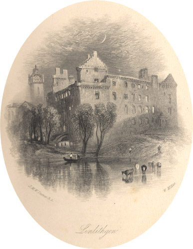

|
d Linlithgow, engraved by W. Miller after J.M.W. Turner (1836).
From: The Prose Works of Sir Walter Scott, Bart. Vol. 25 (Edinburgh: Cadell, 1836). The burgh of Linlithgow, situated between Edinburgh and Stirling, was founded in the mid-12th century by King David I. In the early 15th century James I began converting its castle into a palace which remained a favourite royal residence for centuries. Mary Queen of Scots was born in Linlithgow Palace in 1542. Its last royal resident was Prince Charles Edward Stuart ('Bonnie Prince Charlie'). In January 1746 the Palace was burned out by the Duke of Cumberland's army, and remains a ruin.
|